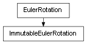

class cymel.core.datatypes.eulerrotation.ImmutableEulerRotation¶

-
class
cymel.core.datatypes.eulerrotation.ImmutableEulerRotation¶ ベースクラス:
cymel.core.datatypes.eulerrotation.EulerRotationEulerRotationのimmutableラッパー。Methods:
boundIt(*args, **kwargs)incrementalRotateBy(*args, **kwargs)invertIt(*args, **kwargs)reorderIt(*args, **kwargs)set(*args, **kwargs)setToAlternateSolution(*args, **kwargs)setToClosestCut(*args, **kwargs)setToClosestSolution(*args, **kwargs)setToReverseDirection(*args, **kwargs)setValue(*args, **kwargs)Methods Details:
-
boundIt(*args, **kwargs)¶
-
incrementalRotateBy(*args, **kwargs)¶
-
invertIt(*args, **kwargs)¶
-
reorderIt(*args, **kwargs)¶
-
set(*args, **kwargs)¶
-
setToAlternateSolution(*args, **kwargs)¶
-
setToClosestCut(*args, **kwargs)¶
-
setToClosestSolution(*args, **kwargs)¶
-
setToReverseDirection(*args, **kwargs)¶
-
setValue(*args, **kwargs)¶
-